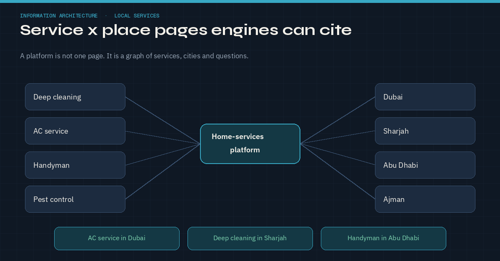
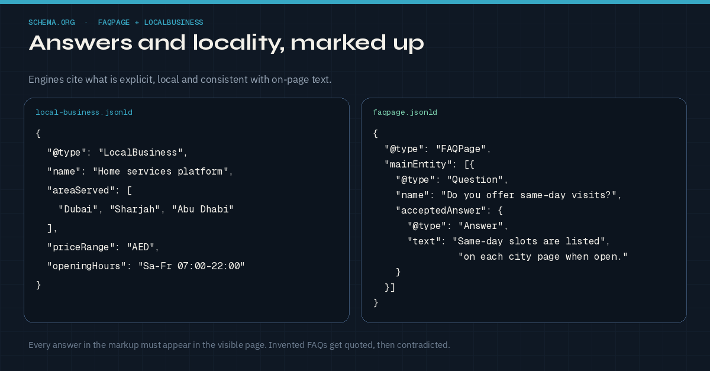

How a Dubai home-services platform became citation-ready for AI engines
A home-services platform is asked different questions from a manufacturer, and it is asked them more often inside chat. How much is a deep clean in Dubai? Can someone service an AC in Sharjah today? What is included, and when do you pay? If those answers live only in an app or a call centre, an answer engine will guess, or recommend a competitor whose prices are public. The work I did for the platform was to put the facts a model needs — services, places, starting prices, booking rules and languages — on crawlable pages, in a machine-readable brief, and in structured data that matches the visible copy.

Context
The platform books household and commercial services across the UAE: cleaning, AC work, handyman jobs, pest control, maid hours, and a longer tail of related services. Customers book on the web or through messaging, in more than one language. The promise is a clear indicative price, a confirmed quote, and a vetted professional. That is a good fit for AEO, because the questions are factual and local. It is also a dangerous fit, because a wrong price, confidently cited, is worse than no citation at all.
The problem
Local service platforms usually fail generative search in four ways. They have a homepage and a blog, but no stable URL for "AC service in Dubai". They hide prices until after a lead form, so the engine cites a competitor or invents a number. They block AI crawlers, sometimes accidentally, with a generic "block bots" rule. And they publish marketing claims in schema that do not appear on the page, or that conflict with later terms. The citation then looks authoritative and is wrong.
What I did, technically
An explicit crawler policy
robots.txt names the crawlers that matter and allows them on public content: GPTBot, OAI-SearchBot, ChatGPT-User, ClaudeBot, Google-Extended, PerplexityBot, Applebot-Extended, Amazonbot, Googlebot, Bingbot, and their peers. Administrative, payment and tokenised paths stay disallowed. At least one aggressive commercial crawler is blocked on purpose. The file ends with a sitemap directive. This is boring infrastructure, and it is the difference between being eligible for a citation and being invisible to the retrieval layer.
A brief that a model can actually use
/llms.txt is served as text/plain and written as an operations briefing, not a tagline sheet. It states what the platform is, how to contact it, what it offers (with starting prices where those prices are public), where it operates, how booking and payment work, the usual questions, the languages supported, and the boundaries — for example a service arranged on request rather than sold as a fixed online product.
# Home services platform
> Booking and coordination platform for home and commercial
> services across the United Arab Emirates. Indicative AED
> prices, confirmed before payment.
## Services
- [Deep cleaning](https://example.com/services/deep-cleaning): top-to-bottom clean; starting price on the page.
- [AC service](https://example.com/services/ac): coil, filter and related maintenance; starting price on the page.
## Areas served
- [Dubai](https://example.com/area/dubai)
- [Sharjah](https://example.com/area/sharjah)
## Frequently asked questions
- Q: Do you offer same-day visits?
A: Same-day slots are listed on each city page when they are open.
Every price and every limitation in the file has to match the service page. When a seasonal service is enquiry-first, the brief says so, instead of inventing a starting rate.

Service pages, area pages, and the combinations
The information architecture is a graph, not a homepage. There is a URL for each service, a URL for each city or area, and combination URLs where a service is offered in a place. Sitemaps are split by type — pages, services, areas, editorial, media, and the combination sets — and together they run into the thousands of URLs. That scale only works if the pages are not clones. Each service page states what is included, the indicative price, constraints and a short FAQ. Each area page states coverage. A combination page still needs a unique title, an H1, and a clear sentence that this service is available in this city on the published terms.
Structured data that matches the funnel
The homepage carries several schema types at once, because it has several jobs: LocalBusiness (with a more specific subtype), including area served, coordinates and opening hours; Organization and contact points; WebSite with a SearchAction; an OfferCatalog of Service and Offer nodes; HowTo for the booking steps, with a time estimate and a cost range in AED; WebPage with SpeakableSpecification on the headings a voice assistant should read; FAQPage for booking, payment and cancellation, with answers that also appear on the page; and MobileApplication where an app is genuinely offered.

{
"@context": "https://schema.org",
"@type": "FAQPage",
"mainEntity": [{
"@type": "Question",
"name": "How do I book a visit?",
"acceptedAnswer": {
"@type": "Answer",
"text": "Choose a service and a time, enter a UAE mobile number and address, then pay to confirm the slot. You can also book by messaging."
}
}]
}
Service and city pages repeat the FAQ pattern only for the questions that belong there.
Languages and channels
The public brief and the on-page copy state support for English, Arabic, Hindi and Filipino, with a wider set of languages handled in the conversational assistant. That is a real operating fact. In this audit I did not find a distinct /ar HTML version or hreflang annotations, so I will not claim a fully localised web stack I could not observe. Messaging can be multilingual even when the HTML is primarily English. The brief also documents how a customer can ask about the service inside an AI assistant, and it points at public API routes. Those methods make the business callable; they are not proof of ranking.
How AI engines pick this up
A query like "AC service in Dubai, how much, can they come today" has three keys: service, city, and a constraint. The combination URL, the Offer and FAQPage markup, and the matching lines in llms.txt should all point at the same answer. SpeakableSpecification and HowTo help voice and step-wise interfaces; LocalBusiness and areaServed stop the model placing the company in the wrong emirate. The failure mode I design against is a confident wrong price. If same-day availability is conditional, the page, the schema and the brief must all say so. If a service is quote-only, it must not carry a fake Offer.
Results I can actually verify
I can verify a thorough technical stack: named allows for the major AI crawlers, a substantial text/plain llms.txt, a large but typed sitemap, rich JSON-LD, public starting prices on service pages, and conventional web-search visibility for queries around home services, cleaning and AC work in Dubai, where the platform's own pages appear. I cannot independently confirm that ChatGPT, Perplexity, Gemini or Google AI Overviews currently cite the platform, or how often. Those claims need fresh screenshots and logs. What I can say is that the site is built so a citation, when it happens, has a factual source to point at.
Lessons
Publish the facts you are willing to be quoted on: starting prices, coverage and booking rules belong on the page. Build the graph of service and place, then mark it up. Keep the brief, the schema and the visible copy in lockstep; a mismatch is a reputation risk once models start quoting you. And be honest about languages and quote-only services. Answer engines amplify whatever you write down.
Common questions
Does a page for every neighbourhood help or hurt?
It helps when the page is genuinely about that place, and it hurts when it is a synonym swapped into a template. I would rather have strong city pages and a smaller set of well-made combinations than thousands of near-duplicates.
Should prices go in llms.txt?
Yes, if they are already public and kept current. A brief that disagrees with the page will be quoted, and then challenged. If a price changes often, point at the page and say the page is the source.
Is blocking some AI crawlers a contradiction?
No. Allow the retrieval agents you want citations from. Block crawlers you do not intend to serve. Write that policy down so it is not reversed by accident.